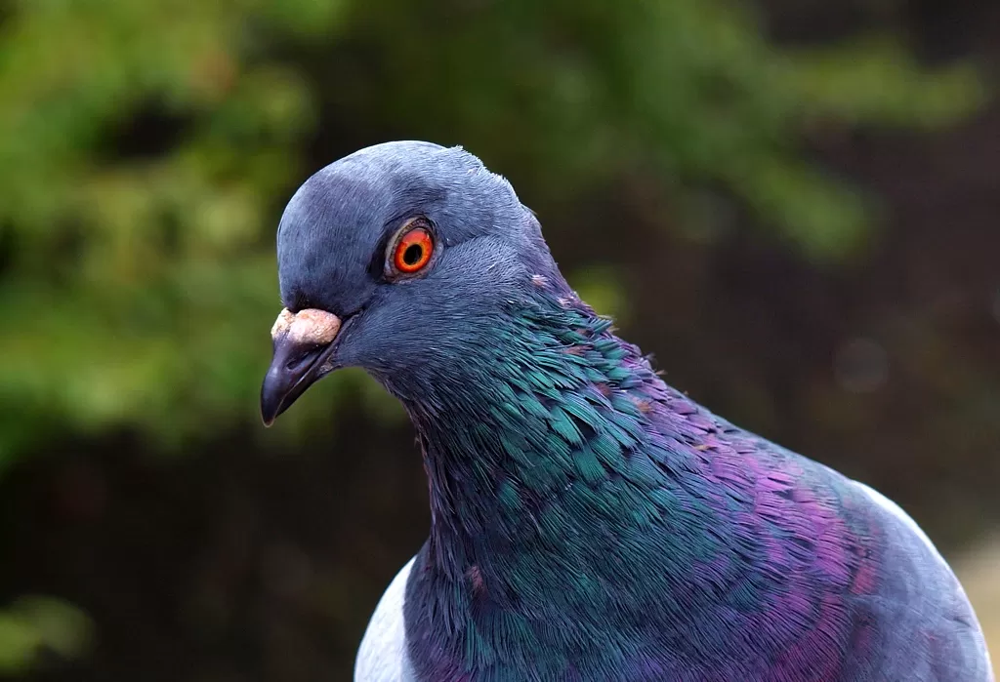

They Are No Pigeons
esse éo link do pagodinho cara Clicae Bixo Pagodinho Iceberg
Medindo cerca de 41 cm e pesando cerca de 600 gramas, tem como característica marcante as longas penas do pescoço, a cauda curta, as longas e fortes asas, o bico robusto dotado de uma calosidade na base, a plumagem azul-metálico-escuro e as asas azul-esverdeado.
Esta espécie exibe dimorfismo sexual, porquanto os machos são ligeiramente maiores do que as fêmeas. Os espécimes juvenis têm caudas de coloração escura, geralmente preta
Mais conhecido como pombo Serralha de marcenaria do evaldo.
uma raça hibrida entre madeira e pombo que foi criada em laboratório para se disfarçar entrar em marcenarias e colher informações para dominação mundial
2. Pombo Pizzaiolo 🐔 ☕
Mais Conhecido com Pizzaiallys Pizuz o Pombo Pizzaiolo.
é muito famoso por fazer deliciosas Pizzas.
Não preciso dizer mais Nada né kkk.
é Um Pombo Monge ou seja sai pelo mundo buscando ingredientes para fazer suas receitas magnificas e apresenta-las ao mundo
3. Gangue De Pombos ♠ 🚬
Sabe gangue de pombo então cara